La vidéo de Pursuing AI met en lumière l'arrivée en accès anticipé de **Seedance 2.0** (phonétiquement transcrit « C-Dance 2 »), un générateur vidéo par IA de pointe associé officiellement à la plateforme **xmk.com** (xmk). Ce modèle s'impose comme une révolution dans l'écosystème de la création audiovisuelle grâce à son réalisme saisissant, sa capacité à gérer des prompts complexes et sa faculté native à synchroniser l'audio et la vidéo. Le présentateur démontre comment contourner le lancement mondial officiel pour tester immédiatement le modèle sur une interface centralisée, ouvrant la voie à des productions cinématiques d'une fluidité inédite.
La méthode présentée repose sur un parcours utilisateur fluide au sein de la plateforme xmk.com, où le créateur sélectionne explicitement Seedance 2.0 parmi le menu des modèles disponibles. Le workflow s'articule autour de trois modes de génération majeurs : la référence multimodale (autorisant jusqu'à 12 fichiers combinant images, vidéos et audio), l'interpolation entre une première et une dernière image, et le classique mode texte-vers-vidéo. Pour chaque génération, l'utilisateur peut arbitrer entre les versions **Fast** et **Pro**, ajuster le format (16:9), définir la durée (de 4 à 15 secondes) et consommer des crédits payants adaptés à ses ambitions créatives.
Pour les créateurs de contenu, les réalisateurs et les agences, Seedance 2.0 représente un bond en avant technologique considérable pour concevoir des scènes ultra-détaillées sans artefacts visuels majeurs. Qu'il s'agisse de simuler des effets d'explosion complexes, de reproduire la viscosité naturelle du miel ou d'animer des personnages avec des micro-expressions oculaires et des mouvements fluides, l'outil redéfinit les standards de l'industrie. L'intégration de guides de prompts et la prise en charge de formats longs (jusqu'à 15 secondes) permettent de s'affranchir des limites habituelles de l'IA générative et d'accélérer les pipelines de production professionnelle.
C-Dance 2 est enfin là ! Et aujourd'hui, je vais vous montrer exactement comment y accéder. Oui, vous avez bien entendu. Vous pouvez réellement obtenir un accès anticipé à C-Dance 2 avant son lancement mondial officiel. Et non, il ne s'agit pas d'un faux modèle qui circule sur Internet.
Interface & Outils : Site web de génération vidéo XMK.com (Seedance 2.0 AI Video Generator) et extraits vidéo de démonstration générés par IA.
Contenu textuel & Code : Textes visibles sur l'interface : "Seedance 2.0 AI Video Generator", "Supports text, image, audio, and video references with precise motion, consistency, and immersive audio-visual output. Create cinematic AI videos with unified multimodal control.", "Reference Generation", "Text to Video", "Upload Media", "Click to upload assets", "Prompt", "Cinematic Creation".
Action / Démonstration : Présentation de l'interface de l'outil Seedance 2.0 sur le web, suivie d'extraits vidéo cinématographiques générés par IA montrant une troupe de danseurs de rue dans une rue humide la nuit.
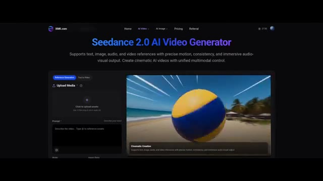
🔍 Agrandir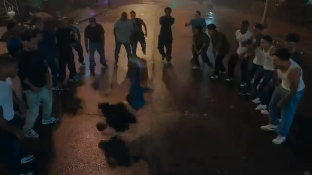
🔍 Agrandir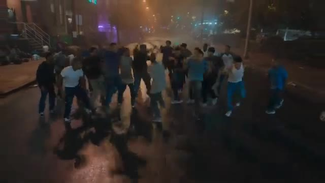
🔍 AgrandirCeci est le véritable modèle C-Dance 2. Et tout ce que vous voyez en ce moment, tous ces résultats vidéo, ont été générés en utilisant C-Dance 2 lui-même. Je joue avec ça depuis un moment maintenant, et c'est différent de tout ce que j'ai jamais vu auparavant. C'est Pursuing AI, et vous regardez The Research Report.
Interface & Outils : Modèle de génération vidéo par intelligence artificielle (C-Dance 2) et graphismes de la chaîne Pursuing AI.
Contenu textuel & Code : Résultats de vidéos générées par IA (danse de rue nocturne, intérieur luxueux) et logo animé de la chaîne « PAI » avec un cerveau et des connexions.
Action / Démonstration : Présentation de séquences vidéo entièrement générées par le modèle C-Dance 2 suivies du logo de la chaîne.
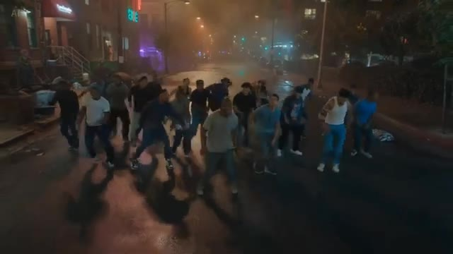
🔍 Agrandir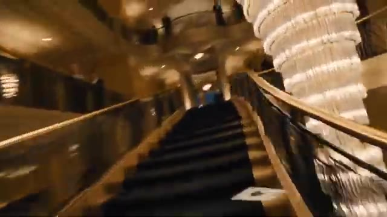
🔍 Agrandir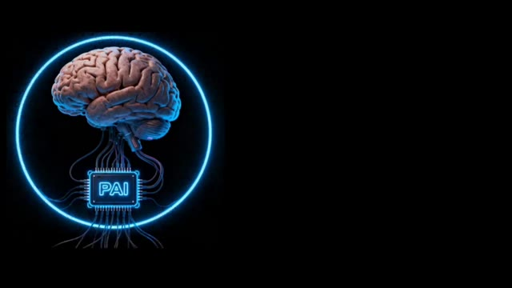
🔍 AgrandirDans cette vidéo, je vais vous montrer étape par étape comment vous pouvez y accéder dès maintenant et commencer à créer des vidéos incroyables comme celle-ci. Donc, sans perdre plus de temps, plongeons directement dans la vidéo. D'accord, c'est donc le site web dont je parlais. Ils se sont officiellement associés à ByteDance, et le modèle C-Dance 2 est déjà en ligne sur leur plateforme, ce qui signifie que vous pouvez y accéder dès maintenant.
Interface & Outils : Site web XMK.com et extraits de vidéos générées par intelligence artificielle.
Contenu textuel & Code : Textes visibles sur le site XMK.com : "XMK is your Ai eXtreme Media Kit. Try it now on XMK.com", "Create your image & video all-in-one with XMK.COM. Free try our advanced AI generation features now!", et le bouton bleu "Free Try Seedance 2.0". Menu supérieur avec Home, AI Video, AI Image, Pricing, Referral, Login.
Action / Démonstration : Présentation d'exemples de vidéos générées par IA suivie de la transition vers la page d'accueil du site web XMK.com.
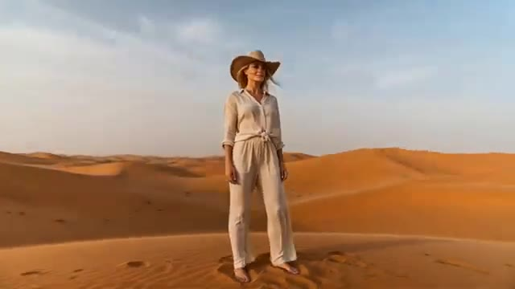
🔍 AgrandirPour commencer, cliquez simplement sur le lien dans la description et inscrivez-vous en utilisant votre identifiant e-mail. Une fois inscrit, vous serez dirigé directement vers cette interface. À partir de là, survolez le menu supérieur, et vous verrez l'option pour sélectionner différents modèles. Choisissez simplement le modèle C-Dance 2 dans la liste. Et une fois que vous l'aurez sélectionné, voici l'interface principale où vous pourrez commencer à créer vos vidéos.
Interface & Outils : Site web XMK.com, interface de la plateforme de génération de vidéo Seedance 2.0.
Contenu textuel & Code : "XMK is your Ai eXtreme Media Kit. Try it now on XMK.com", "Create your image & video all-in-one with XMK.COM. Free to try our advanced AI generation features now!", "Free Try Seedance 2.0", "Seedance 2.0 AI Video Generator", "Supports text, image, audio, and video references with precise motion, consistency, and immersive audio-visual output."
Action / Démonstration : Navigation sur le site web de la plateforme d'intelligence artificielle et affichage de l'interface de génération vidéo Seedance 2.0.
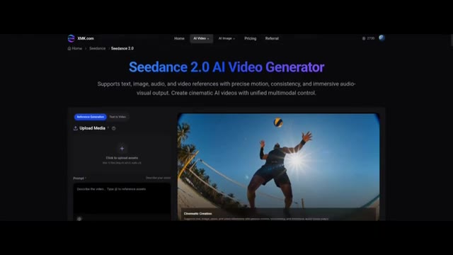
🔍 AgrandirMaintenant, voici la partie intéressante. Il y a trois façons différentes de générer des vidéos. La première est le modèle de génération par référence. Ici, vous pouvez télécharger des images, des vidéos et même des fichiers audio. Oui, vous avez bien entendu. Vous pouvez télécharger plusieurs types de médias en même temps. Comme vous pouvez le voir, vous pouvez télécharger jusqu'à 12 fichiers, y compris des vidéos et de l'audio, ce qui est franchement assez fou.
Interface & Outils : Interface web de Seedance 2.0 AI Video Generator.
Contenu textuel & Code : Titre "Seedance 2.0 AI Video Generator", onglets "Reference Generation" et "Text to Video", zone "Upload Media" avec le texte "Click to upload assets. Max 12 files (img ≤9, vid ≤3, audio ≤3)", et le champ de prompt "Describe the video... Type @ to reference assets".
Action / Démonstration : Présentation de l'interface de génération vidéo par référence de Seedance 2.0, en se concentrant sur les options de téléchargement de multiples types de fichiers multimédias.
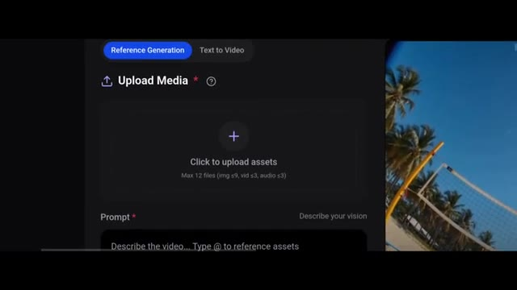
🔍 AgrandirCela vous donne beaucoup plus de contrôle sur l'apparence de votre vidéo finale. Elle dispose également d'une option de première et dernière image, ce qui est assez explicite. Vous pouvez télécharger une image de départ et une image de fin, et le modèle générera une transition fluide entre elles. Et puis vous avez aussi la classique option texte-vers-vidéo.
Interface & Outils : Interface web de Seedance 2.0 AI Video Generator sur XMK.com avec un panneau de génération par référence et un lecteur vidéo de prévisualisation.
Contenu textuel & Code : Titre : "Seedance 2.0 AI Video Generator". Sous-titre : "Supports text, image, audio, and video references with precise motion, consistency, and immersive audio-visual output." Onglets : "Reference Generation", "Text to Video". Bouton : "Upload Media" avec "Click to upload assets". Champ de texte prompt : "Describe the video... Type @ to reference assets". Aperçu vidéo avec légende : "Cinematic Creation".
Action / Démonstration : Navigation et présentation de l'interface de génération vidéo de Seedance 2.0, montrant les zones de téléchargement de médias et les options de prompt textuel.
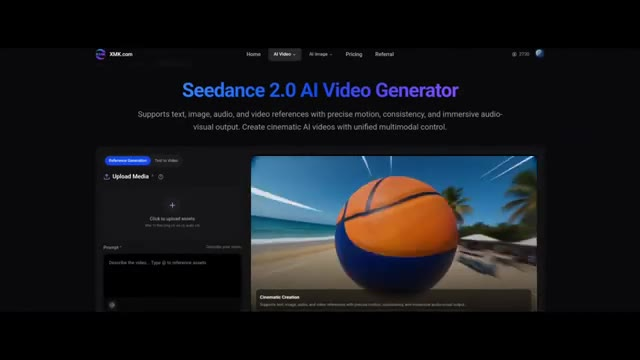
🔍 AgrandirDonc maintenant, allons-y pour créer quelques vidéos et voir cela en action. D'abord, essayons l'option texte-vers-vidéo. Ici, j'ai collé mon prompt. Comme vous pouvez le voir, il y a deux versions de C-Dance 2 disponibles, Fast et Pro. Je choisis le modèle Pro. Vous pouvez également sélectionner différents formats d'image selon vos besoins.
Interface & Outils : Interface web de Seedance 2.0 AI Video Generator (XMK.com).
Contenu textuel & Code : Texte : "Seedance 2.0 AI Video Generator", champ de prompt avec un texte descriptif d'une ville américaine au coucher du soleil, options de modèle ("Seedance 2.0 Fast"), format d'image ("16:9"), curseur de durée (réglé sur 5s), et bouton "GENERATE".
Action / Démonstration : Le créateur montre l'interface de génération texte-vers-vidéo, survole les options de modèle et de format, et affiche un exemple de rendu vidéo à droite.
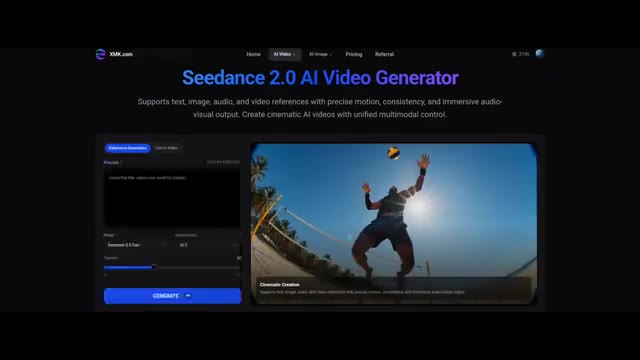
🔍 Agrandir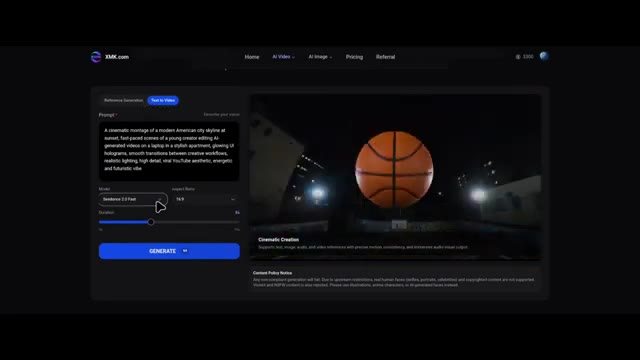
🔍 AgrandirJe choisis le 16 par 9. Vous pouvez générer des vidéos de 4 secondes jusqu'à 15 secondes. Maintenant, une chose importante. La version Pro coûte 120 crédits pour une vidéo de 15 secondes, et la version Fast coûte 64 crédits. De plus, cela peut prendre un certain temps pour générer votre vidéo, car C-Dance 2 est très demandé dans le monde entier.
Interface & Outils : Interface web de la plateforme XMK.com (génération de vidéo par IA) avec menu de navigation (Home, AI Video, AI Image, Pricing, Referral) et solde de crédits (3300).
Contenu textuel & Code : On peut lire le prompt textuel : "A cinematic montage of a modern American city skyline at sunset...". Paramètres visibles : Modèle réglé sur "Seedance 2.0 Pro", Aspect Ratio sur "16:9", curseur de durée (Duration) réglé sur 9s, et un bouton bleu "GENERATE 120".
Action / Démonstration : Le curseur de la souris survole le bouton "GENERATE" ou manipule les options de format d'image et de durée dans l'interface de génération.
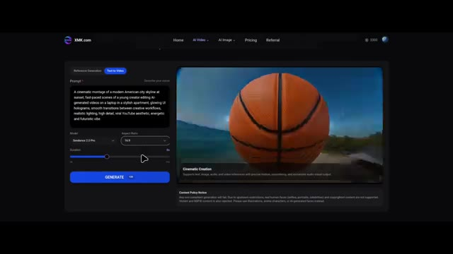
🔍 AgrandirEt voici le résultat. Regardez le niveau de détail.
Interface & Outils : Application mobile affichée sur l'écran d'un smartphone.
Contenu textuel & Code : Icône rouge d'une cloche avec des ondes sonores concentriques à l'intérieur d'une interface d'application mobile, ainsi qu'une vue de synthèse générée par IA représentant une ville dévastée par les flammes.
Action / Démonstration : Présentation du résultat généré par l'IA à l'écran, alternant entre un plan rapproché sur une application mobile et un plan large d'une ville en feu.
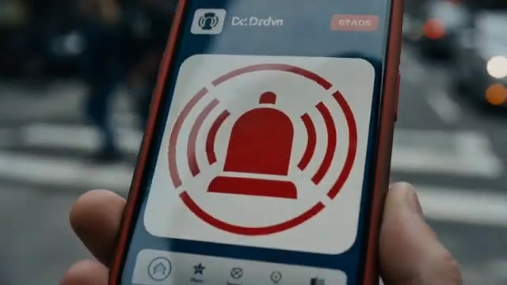
🔍 Agrandir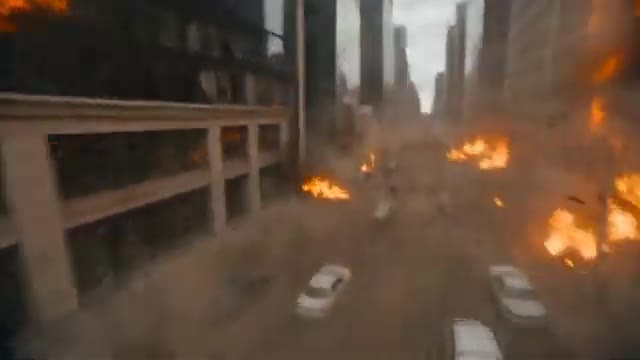
🔍 Agrandir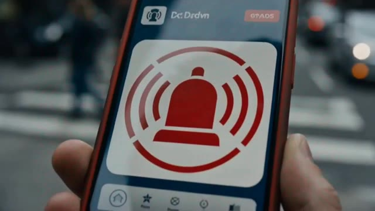
🔍 AgrandirFranchement, aucun autre modèle ne fait ça en ce moment. Même VO 3.1 a du mal à égaler cela. L'alerte sur le téléphone, l'explosion, la façon dont les effets se propagent dans la ville. C'est incroyable. Et la synchronisation audio est également parfaite. Maintenant, cette fois, j'utilise un prompt beaucoup plus complexe et délicat.
Interface & Outils : Interface web de l'outil XMK.com avec panneau de prompt, paramètres de modèle (Seedance 2.5 Pro) et lecteur vidéo.
Contenu textuel & Code : Texte visible dans le champ de prompt : "[Camera & Style] 10-second ultra-cinematic, hyper-realistic first-person POV of a frantically flying bee. Single continuous shot, constant Dutch angle. Extreme macro fisheye lens..." avec les paramètres de modèle Seedance 2.5 Pro et un ratio de 16:9.
Action / Démonstration : Le créateur présente des exemples de rendus vidéo générés par intelligence artificielle, puis bascule sur l'interface de l'outil de génération pour tester un prompt complexe.
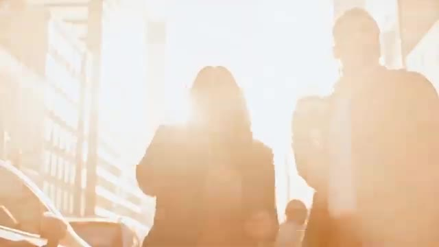
🔍 Agrandir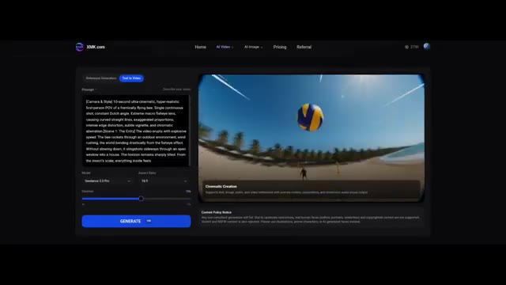
🔍 AgrandirVoyons voir s'il peut gérer ça. Et voici le résultat. Regardez ça ! C'est dingue ! Aucun autre modèle ne produit ce niveau de détail.
Interface & Outils : Démonstration vidéo générée par intelligence artificielle (modèle de génération vidéo avancé).
Contenu textuel & Code : Génération de vidéo ultra-réaliste avec effet de lentille grand angle / caméra subjective (POV) suivant une abeille en mouvement rapide à l'extérieur et à l'intérieur d'une maison.
Action / Démonstration : Lecture d'une séquence vidéo générée par IA montrant un mouvement de caméra ultra-rapide et immersif.
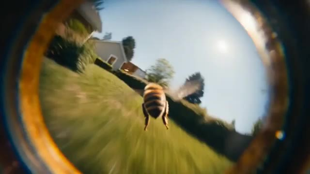
🔍 Agrandir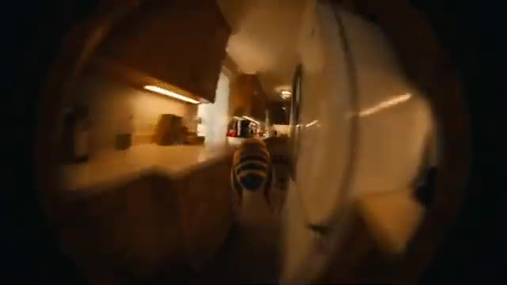
🔍 Agrandir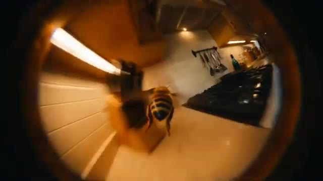
🔍 AgrandirLe mouvement du miel est fluide, sans saccades, sans artefacts bizarres, et même le son des ailes est parfaitement synchronisé. Maintenant, essayons quelque chose d'amusant, puisque C-Dance 2 peut également générer de l'audio. J'utilise cette image et un simple prompt. Et voici le résultat. Des burgers délicieux. Un incontournable.
Interface & Outils : Interface web de génération vidéo (Seedance 2.0 Fast / XMK.com) avec options de modèle, ratio (16:9), durée et bouton de génération bleu.
Contenu textuel & Code : Prompt visible dans l'interface : "The character in the painting @Image1 has a guilty expression, eyes darting left and right before leaning out of the frame..." avec le texte publicitaire final "Delicious Burgers, A Must-Try!".
Action / Démonstration : Démonstration successive d'une génération vidéo d'abeille, de l'interface de configuration de Seedance, de l'image source de départ, et du résultat animé final avec sous-titres et audio.
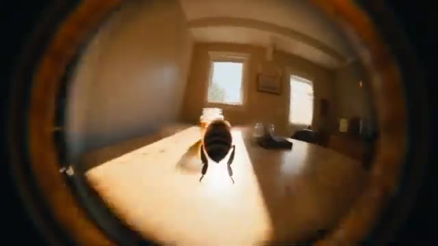
🔍 Agrandir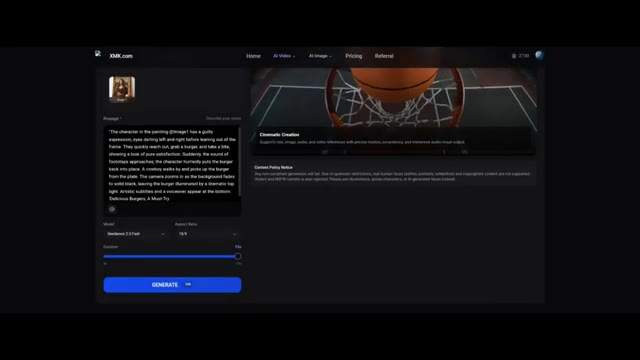
🔍 Agrandir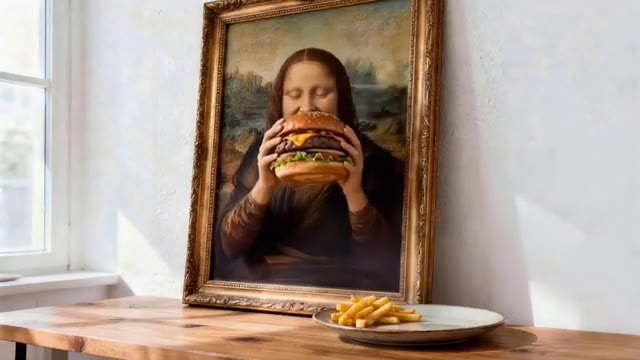
🔍 Agrandir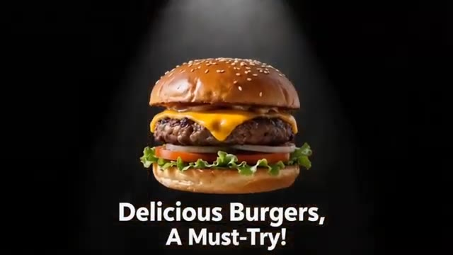
🔍 AgrandirRegardez ça. La fille bouge ses yeux, mange le burger, le remet sur l'assiette, et puis bouge ses yeux à nouveau. Ça a l'air tellement naturel. Maintenant, la plateforme que j'utilise pour accéder à Seedance 2 est xmk.com. Ici, vous pouvez également accéder à différentes versions de Seedance, ainsi qu'à d'autres modèles et outils de génération de vidéo par IA.
Interface & Outils : Le site web xmk.com affichant l'interface de Seedance 2.0 AI Video Generator avec des onglets de navigation (Home, AI Video, AI Image, Pricing, Referral) et des sous-menus pour Seedance (Seedance AI, Seedance 2.0 Pro, Seedance 1.5 Pro, Seedance 1.0 Pro, etc.).
Contenu textuel & Code : Texte affiché sur la page : "Seedance 2.0 AI Video Generator" et "Supports text, image, audio, and video references with precise motion, consistency, and immersive audio-visual output. Create cinematic AI videos with unified multimodal control." Dans l'image 2, le texte incrusté est "Delicious Burgers, A Must-Try!".
Action / Démonstration : Le créateur montre des exemples de vidéos générées par IA (Mona Lisa mangeant un burger, un homme interagissant avec des burgers géants), puis navigue sur le site xmk.com pour présenter l'interface de Seedance 2.0.
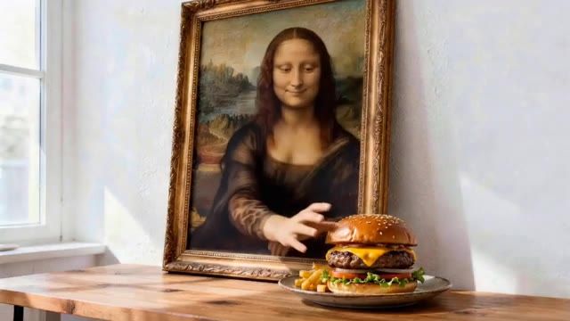
🔍 Agrandir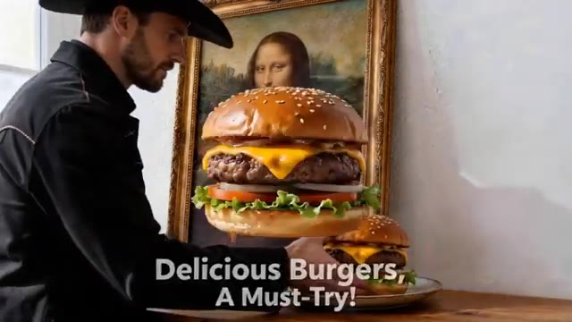
🔍 Agrandir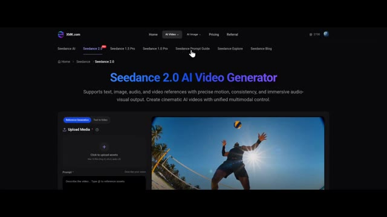
🔍 AgrandirEt si vous ne savez pas comment rédiger des prompts, ils fournissent également un guide de prompts C-Dance, ce qui vous aide à obtenir de meilleurs résultats. Inversement, vous pouvez également consulter les tarifs ici. Choisissez simplement un forfait qui correspond à vos besoins, achetez des crédits et obtenez un accès anticipé à C-Dance 2. C'est tout pour cette vidéo. Maintenant, c'est à votre tour d'essayer.
Interface & Outils : Site web XMK.com (plateforme d'IA génératrice multimédia).
Contenu textuel & Code : Textes visibles : "Seedance 2.0 AI Video Generator", "Premium Plans & Pricing of XMK AI Platform", "Base $9.9", "Pro $29.9", "Ultimate $49.9", "Creator $99.9", "XMK is your Ai eXtreme Media Kit. Try it now on XMK.com", "Free Try Seedance 2.0".
Action / Démonstration : Navigation sur le site web de XMK, visualisation des guides, des tarifs et de la page d'accueil de fin de vidéo.
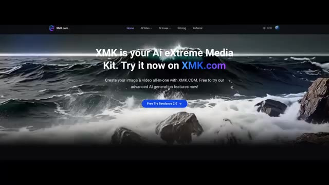
🔍 AgrandirEt si vous avez trouvé cela utile, assurez-vous de vous abonner. Parce que l'IA évolue rapidement, et vous ne voulez pas vous faire distancer. C-Dance 2.0 est maintenant sur XMK.com. C'est plus rapide, plus puissant, et conçu pour la création de vidéos IA cinématiques. Vous pouvez ainsi créer des scènes époustouflantes en quelques secondes. Rendez-vous sur xmk.com et obtenez CDance 2.0, ainsi que tous les principaux modèles d'IA, et commencez à créer sans limites.
Interface & Outils : Site web XMK.com et extraits de démonstration vidéo générés par Seedance 2.0.
Contenu textuel & Code : Texte affiché sur le site web : "XMK is your Ai eXtreme Media Kit. Try it now on XMK.com" et "Free Try Seedance 2.0", ainsi que le titre "SEEEDANCE 2.0" et la mention "AI 生成" (Généré par IA).
Action / Démonstration : Présentation promotionnelle du site web XMK.com et démonstration de clips vidéo cinématiques générés par Seedance 2.0.
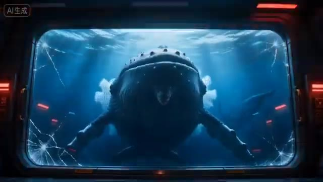
🔍 Agrandir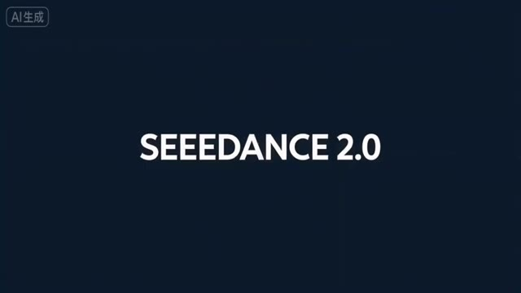
🔍 Agrandir